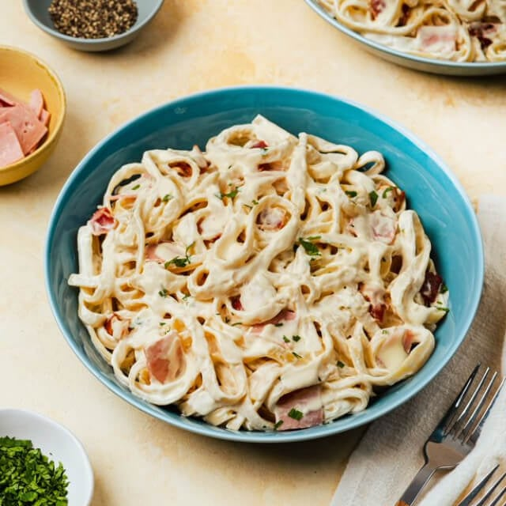

Home
Creamy Carbonara

Description
Carbonara is a classic Italian pasta dish known for its rich, creamy sauce made from eggs, cheese, pancetta or bacon, and black pepper. Traditionally, it does not contain cream, but many variations, especially outside Italy, use all-purpose cream or milk for extra creaminess. It is typically served with spaghetti or fettuccine and is loved for its savory, silky texture and indulgent flavor.
Ingredients:
- 250g spaghetti or fettuccine
- 200g bacon, chopped
- 3 cloves garlic, minced
- 1 cup all-purpose cream
- ½ cup evaporated milk or fresh milk
- ½ cup grated Parmesan cheese
- 1 egg yolk (optional, for extra creaminess)
- Salt and pepper to taste
- 1 tbsp butter or oil
- Fresh parsley (optional, for garnish)
Steps:
- Cook the pasta - Boil water with a pinch of salt, then cook the spaghetti according to package instructions. Drain and set aside.
- Cook the bacon - In a pan, heat butter or oil and cook the bacon until crispy. Remove excess oil if needed.
- Sauté garlic - Add minced garlic to the pan and sauté until fragrant.
- Make the sauce - Lower the heat, then pour in all-purpose cream and milk. Stir well.
- Add cheese and seasoning - Mix in the Parmesan cheese, salt, and pepper. Stir until smooth.
- Combine pasta and sauce - Add the cooked pasta to the pan and toss to coat evenly.
- (Optional) Add egg yolk - Turn off the heat and quickly mix in the egg yolk for a richer texture.
- Serve - Garnish with extra cheese and parsley if desired.